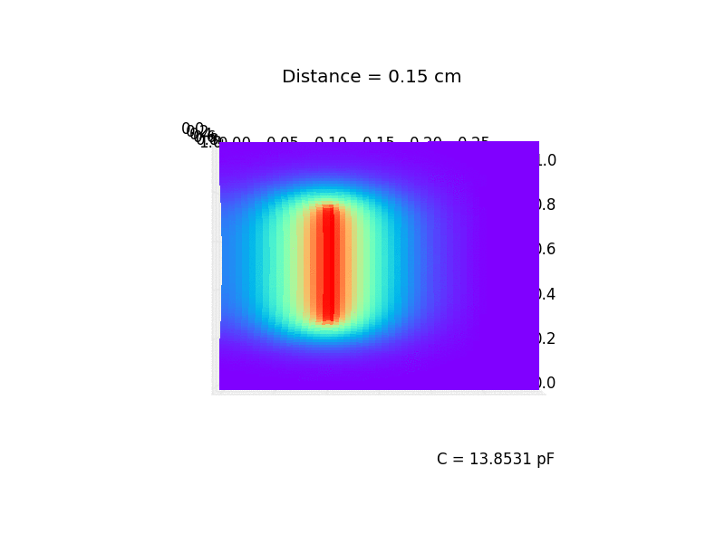
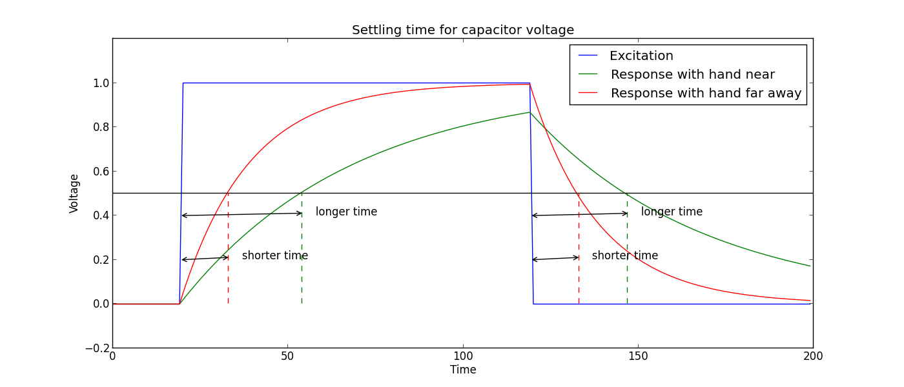

- on Thu 06 November 2014
Category: Theremin,
Theremin, a first electronic instrument. Leon Theremin invented it in 1928. Try to imagine people seeing somebody waving hand in the middle or the air and producing an extraterrestrial sounds. Theremin, should be considered a true pioneer of electronic music.
The operational principle is quite simple, however an good implementation is not so trivial. I recall playing on it in Deutsches Museum in Munich and that particular model had a sphere as an antenna. The tone frequency is dependant on antenna capacitance. To achive maximum control, the relationship between capacitance and distance between hand and antenna should be linear. However, the model in Munich had reciprocal relationship and that made hitting right notes quite hard.
I am going to make a new version of theremin, a reinterpretation for 21st century. I will still use antenna to control the pitch, but the "back-end" will be completely different.
The antenna acts as one plate of the capacitor and the hand is the other. I did a quick simulation in Python to be able to show some numbers. This is meant to be a demonstration of operating principle, so it lacks few not-so-minor details. The calculations were done in 2D, where antenna in real world exist in 3 dimensions.

Now we know that antenna acts as a capacitor, so next challenge is to produce a tone with the pitch related to capacitance. The original Theremin uses antenna as a capacitor of the LC resonator. Here is the first big difference between my implementation and original one, I will be measuring time constant of the RC circuit with an FPGA.
The FPGA will generate a square wave and feed it to antenna through a resistance. This will create a current which will charge capacitor (antenna). The other circuit (module) in FPGA will measure time needed for voltage on capacitor to reach certain level. A bigger capacitance (smaller distance between hand and antenna) will result in longer time and a smaller capacitance (longer distance between hand and antenna) will result in shorter time. This difference will generate a different pitch.

This is all for this part, stay tuned for more.